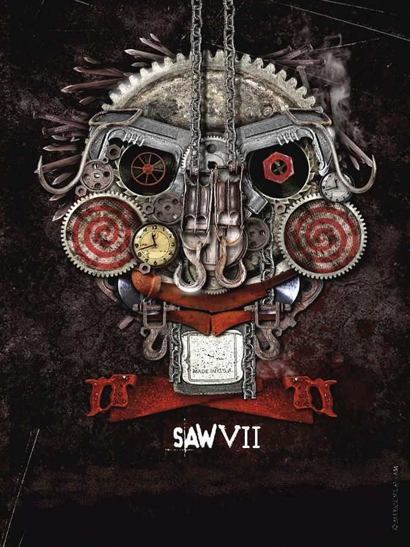

-

-

Saw 4
Jigsaw y su aprendiz Amanda están muertos. Tras conocer la muerte del Detective Kerry, dos avezados criminólogos del FBI, el agente Strahm y el agente Pérez, llegan a la destartalada comisaría de policía y ayudan al veterano Detective Hoffman a investigar el último juego sanguinario de Jigsaw y a unir las piezas del malévolo puzzle. Pero de repente el Comandante Rigg del SWAT, el único oficial al que Jigsaw aún no ha tocado, es secuestrado y obligado a formar parte del terrorífico juego de este psicópata, el oficial sólo tiene noventa minutos para superar una serie de trampas conectadas entre sí... o de lo contrario su vida estará en peligro.